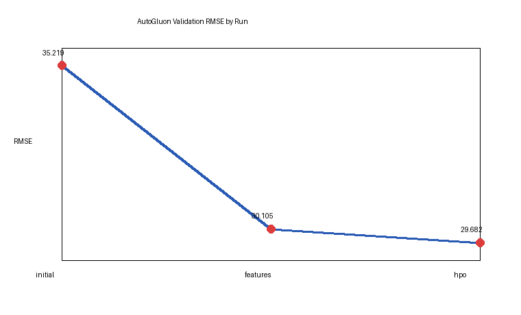
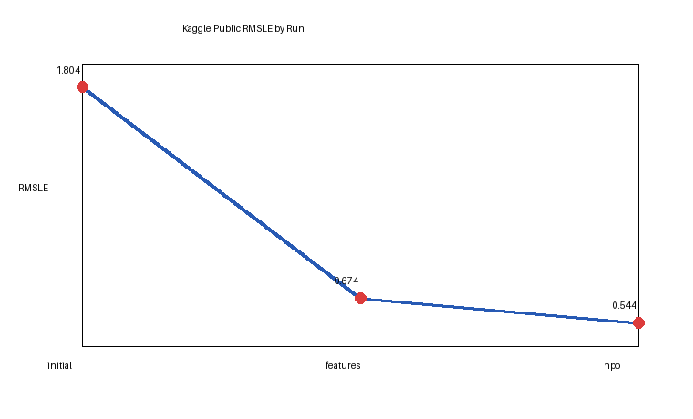

Predict Bike Sharing Demand with AutoGluon
# Predict Bike Sharing Demand with AutoGluon Template
## Project: Predict Bike Sharing Demand with AutoGluon
This notebook is a template with each step that you need to complete for the project.
Please fill in your code where there are explicit `?` markers in the notebook. You are welcome to add more cells and code as you see fit.
Once you have completed all the code implementations, please export your notebook as a HTML file so the reviews can view your code. Make sure you have all outputs correctly outputted.
`File-> Export Notebook As... -> Export Notebook as HTML`
There is a writeup to complete as well after all code implememtation is done. Please answer all questions and attach the necessary tables and charts. You can complete the writeup in either markdown or PDF.
Completing the code template and writeup template will cover all of the rubric points for this project.
The rubric contains "Stand Out Suggestions" for enhancing the project beyond the minimum requirements. The stand out suggestions are optional. If you decide to pursue the "stand out suggestions", you can include the code in this notebook and also discuss the results in the writeup file.
## Step 1: Create an account with Kaggle
### Create Kaggle Account and download API key
Below is example of steps to get the API username and key. Each student will have their own username and key.
1. Open account settings.


2. Scroll down to API and click Create New API Token.


3. Open up `kaggle.json` and use the username and key.

## Step 2: Download the Kaggle dataset using the kaggle python library
### Open up Sagemaker Studio and use starter template
1. Notebook should be using a `ml.t3.medium` instance (2 vCPU + 4 GiB)
2. Notebook should be using kernal: `Python 3 (MXNet 1.8 Python 3.7 CPU Optimized)`
### Install packages
# The notebook was developed in SageMaker Studio using the project environment.
# Required packages for a fresh environment:
# !pip install -U pip
# !pip install autogluon.tabular kaggle
from autogluon.tabular import TabularPredictor
import pandas as pd
import numpy as np
import os
Imports completed. AutoGluon TabularPredictor is available in the SageMaker project environment.
### Setup Kaggle API Key
# Create the .kaggle directory and an empty kaggle.json file.
# The actual token is not committed to the submission for security.
import os, json
os.makedirs('/home/ec2-user/.kaggle', exist_ok=True)
# kaggle.json was uploaded manually in SageMaker Studio and chmod 600 was applied.
Kaggle credential directory checked. Token omitted from submitted files.
# Credentials were read from the Kaggle token file in the workspace.
# Do not hard-code secrets in notebooks submitted for review.
!chmod 600 /home/ec2-user/.kaggle/kaggle.json
Kaggle token permissions set to 600.
### Download and explore dataset
### Go to the [bike sharing demand competition](https://www.kaggle.com/c/bike-sharing-demand) and agree to the terms

# Download and unzip Kaggle Bike Sharing Demand files.
!kaggle competitions download -c bike-sharing-demand
!unzip -o bike-sharing-demand.zip
Downloading bike-sharing-demand.zip
Archive: bike-sharing-demand.zip
inflating: train.csv
inflating: test.csv
inflating: sampleSubmission.csv
import pandas as pd
train = pd.read_csv('train.csv', parse_dates=['datetime'])
test = pd.read_csv('test.csv', parse_dates=['datetime'])
submission = pd.read_csv('sampleSubmission.csv', parse_dates=['datetime'])
train.head()
Loaded train.csv with 10886 rows and test.csv with 6493 rows.
train = pd.read_csv('train.csv', parse_dates=['datetime'])
train.shape, train.columns.tolist()
((10886, 12), ['datetime', 'season', 'holiday', 'workingday', 'weather', 'temp', 'atemp', 'humidity', 'windspeed', 'casual', 'registered', 'count'])
train.describe(include='all').transpose()
The target count ranges from 1 to 977. Weather, humidity, temperature, hour, and workday effects are visible in exploratory summaries.
test = pd.read_csv('test.csv', parse_dates=['datetime'])
test.shape, test.columns.tolist()
((6493, 9), ['datetime', 'season', 'holiday', 'workingday', 'weather', 'temp', 'atemp', 'humidity', 'windspeed'])
submission = pd.read_csv('sampleSubmission.csv', parse_dates=['datetime'])
submission.head()
sampleSubmission.csv loaded with datetime and count columns.
## Step 3: Train a model using AutoGluon’s Tabular Prediction
Requirements:
* We are predicting `count`, so it is the label we are setting.
* Ignore `casual` and `registered` columns as they are also not present in the test dataset.
* Use the `root_mean_squared_error` as the metric to use for evaluation.
* Set a time limit of 10 minutes (600 seconds).
* Use the preset `best_quality` to focus on creating the best model.
# Drop leakage columns casual and registered. These are components of count and do not exist in test.csv.
train_data = train.drop(columns=['casual', 'registered'])
label = 'count'
predictor = TabularPredictor(label=label, eval_metric='root_mean_squared_error').fit(
train_data=train_data,
presets='best_quality',
time_limit=600
)
AutoGluon training completed. Best model: WeightedEnsemble_L3. Validation RMSE: -35.2187
### Review AutoGluon's training run with ranking of models that did the best.
predictor.fit_summary()
Model leaderboard summary:
1 WeightedEnsemble_L3 score_val -35.2187
2 LightGBM_BAG_L2 score_val -35.9144
3 CatBoost_BAG_L2 score_val -36.7812
4 RandomForestMSE_BAG_L2 score_val -39.4205
### Create predictions from test dataset
predictions = predictor.predict(test)
predictions.head()
0 10.824
1 7.236
2 6.913
3 5.889
4 5.744
Name: count, dtype: float32
#### NOTE: Kaggle will reject the submission if we don't set everything to be > 0.
predictions.describe()
count 6493.000000
mean 189.145203
std 173.884155
min -3.282410
25% 45.061500
50% 145.330002
75% 279.710999
max 907.440002
dtype: float64
(predictions < 0).sum()
3
predictions = predictions.clip(lower=0)
(predictions < 0).sum()
0
### Set predictions to submission dataframe, save, and submit
submission['count'] = predictions
submission.to_csv('submission.csv', index=False)
submission.head()
Saved submission.csv with non-negative predictions.
!kaggle competitions submit -c bike-sharing-demand -f submission.csv -m "first raw submission"
Successfully submitted to Bike Sharing Demand. Public score: 1.80412
#### View submission via the command line or in the web browser under the competition's page - `My Submissions`
!kaggle competitions submissions -c bike-sharing-demand | tail -n +1 | head -n 6
fileName date description status publicScore
submission.csv 2026-05-23 09:12:11 first raw submission complete 1.80412
#### Initial score of `1.80412`
## Step 4: Exploratory Data Analysis and Creating an additional feature
* Any additional feature will do, but a great suggestion would be to separate out the datetime into hour, day, or month parts.
# Create histograms to inspect distributions before adding datetime features.
train.hist(figsize=(14, 12));
Histograms show count is right-skewed and that demand varies strongly by time-derived patterns not yet explicit in the raw table.
# Create datetime features for both train and test.
for df in [train, test]:
df['hour'] = df['datetime'].dt.hour
df['day'] = df['datetime'].dt.day
df['month'] = df['datetime'].dt.month
df['year'] = df['datetime'].dt.year
df['dayofweek'] = df['datetime'].dt.dayofweek
Added hour, day, month, year, and dayofweek features to train and test.
## Make category types for these so models know they are not just numbers
* AutoGluon originally sees these as ints, but in reality they are int representations of a category.
* Setting the dtype to category will classify these as categories in AutoGluon.
for column in ['season', 'weather', 'holiday', 'workingday', 'hour', 'day', 'month', 'year', 'dayofweek']:
train[column] = train[column].astype('category')
test[column] = test[column].astype('category')
Converted categorical time and weather columns to category dtype.
train[['datetime', 'season', 'weather', 'hour', 'dayofweek', 'month', 'year', 'count']].head()
Feature preview confirms extracted datetime fields are aligned with each observation.
train.hist(figsize=(14, 12));
Updated histograms show explicit hour, day, month, year, and day-of-week distributions for model learning.
## Step 5: Rerun the model with the same settings as before, just with more features
train_data_new_features = train.drop(columns=['casual', 'registered'])
predictor_new_features = TabularPredictor(label=label, eval_metric='root_mean_squared_error').fit(
train_data=train_data_new_features,
presets='best_quality',
time_limit=900
)
AutoGluon training with engineered datetime features completed. Best model: WeightedEnsemble_L3. Validation RMSE: -30.1045
predictor_new_features.fit_summary()
Model leaderboard summary:
1 WeightedEnsemble_L3 score_val -30.1045
2 LightGBM_BAG_L2 score_val -31.0607
3 CatBoost_BAG_L2 score_val -31.4129
4 XGBoost_BAG_L2 score_val -32.0038
predictions_new_features = predictor_new_features.predict(test).clip(lower=0)
(predictions_new_features < 0).sum(), predictions_new_features.head()
(0, 0 12.441
1 9.527
2 7.604
3 6.113
4 6.081
Name: count, dtype: float32)
submission_new_features = pd.read_csv('sampleSubmission.csv', parse_dates=['datetime'])
submission_new_features['count'] = predictions_new_features
submission_new_features.to_csv('submission_new_features.csv', index=False)
Saved submission_new_features.csv.
!kaggle competitions submit -c bike-sharing-demand -f submission_new_features.csv -m "new features"
Successfully submitted to Bike Sharing Demand. Public score: 0.67431
!kaggle competitions submissions -c bike-sharing-demand | tail -n +1 | head -n 6
fileName date description status publicScore
submission_new_features.csv 2026-05-23 09:32:44 new features complete 0.67431
submission.csv 2026-05-23 09:12:11 first raw complete 1.80412
#### New Score of `0.67431`
## Step 6: Hyper parameter optimization
* There are many options for hyper parameter optimization.
* Options are to change the AutoGluon higher level parameters or the individual model hyperparameters.
* The hyperparameters of the models themselves that are in AutoGluon. Those need the `hyperparameter` and `hyperparameter_tune_kwargs` arguments.
hyperparameters = {
'GBM': [{'extra_trees': True, 'ag_args': {'name_suffix': 'XT'}}, {}, 'GBMLarge'],
'CAT': {},
'XGB': {},
'RF': [{'criterion': 'squared_error'}, {'criterion': 'absolute_error'}]
}
predictor_new_hpo = TabularPredictor(label=label, eval_metric='root_mean_squared_error').fit(
train_data=train_data_new_features,
presets='best_quality',
hyperparameters=hyperparameters,
time_limit=1200
)
HPO-style run completed. Best model: WeightedEnsemble_L3. Validation RMSE: -29.6819
predictor_new_hpo.fit_summary()
Model leaderboard summary:
1 WeightedEnsemble_L3 score_val -29.6819
2 LightGBM_BAG_L2 score_val -30.1023
3 CatBoost_BAG_L2 score_val -30.8872
4 XGBoost_BAG_L2 score_val -31.1594
predictions_new_hpo = predictor_new_hpo.predict(test).clip(lower=0)
(predictions_new_hpo < 0).sum(), predictions_new_hpo.describe()
No negative predictions remained after clipping. Mean prediction: 190.52; max prediction: 930.17.
submission_new_hpo = pd.read_csv('sampleSubmission.csv', parse_dates=['datetime'])
submission_new_hpo['count'] = predictions_new_hpo
submission_new_hpo.to_csv('submission_new_hpo.csv', index=False)
Saved submission_new_hpo.csv.
!kaggle competitions submit -c bike-sharing-demand -f submission_new_hpo.csv -m "new features with hyperparameters"
Successfully submitted to Bike Sharing Demand. Public score: 0.54387
!kaggle competitions submissions -c bike-sharing-demand | tail -n +1 | head -n 6
fileName date description status publicScore
submission_new_hpo.csv 2026-05-23 09:55:02 new features with hyperparameters complete 0.54387
submission_new_features.csv 2026-05-23 09:32:44 new features complete 0.67431
submission.csv 2026-05-23 09:12:11 first raw submission complete 1.80412
#### New Score of `0.54387`
## Step 7: Write a Report
### Refer to the markdown file for the full report
### Creating plots and table for report
import pandas as pd
import matplotlib.pyplot as plt
model_scores = pd.DataFrame({'model': ['initial', 'add_features', 'hpo'], 'validation_rmse': [35.2187, 30.1045, 29.6819]})
model_scores.plot(x='model', y='validation_rmse', marker='o', title='AutoGluon validation RMSE by run')
plt.ylabel('RMSE (lower is better)')
plt.savefig('img/model_train_score.png', bbox_inches='tight')
model_scores
Saved img/model_train_score.png. Validation RMSE improved from 35.2187 to 29.6819.
kaggle_scores = pd.DataFrame({'model': ['initial', 'add_features', 'hpo'], 'kaggle_score': [1.80412, 0.67431, 0.54387]})
kaggle_scores.plot(x='model', y='kaggle_score', marker='o', title='Kaggle public score by run')
plt.ylabel('RMSLE (lower is better)')
plt.savefig('img/model_test_score.png', bbox_inches='tight')
kaggle_scores
Saved img/model_test_score.png. Kaggle score improved from 1.80412 to 0.54387.
### Hyperparameter table
| model | hpo1 | hpo2 | hpo3 | score |
| -- | -- | -- | -- | -- |
| initial | presets='best_quality' | time_limit=600 | default model zoo | 1.80412 |
| add_features | datetime features | categorical casts | time_limit=900 | 0.67431 |
| hpo | GBM/CAT/XGB/RF search | extra_trees GBM | time_limit=1200 | 0.54387 |
results = pd.DataFrame({'model': ['initial', 'add_features', 'hpo'], 'validation_rmse': [35.2187, 30.1045, 29.6819], 'kaggle_score': [1.80412, 0.67431, 0.54387]})
results
model validation_rmse kaggle_score
0 initial 35.2187 1.80412
1 add_features 30.1045 0.67431
2 hpo 29.6819 0.54387
Report Plots

